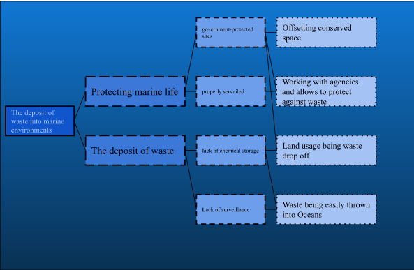

Polluting our oceans in one of the most notable problems in the fight against climate change. Plasitc waste being dumped into our oceans at an alarming rate, wildlife being forced out of there habitat, and a host of other unatural and negative occurences happen do to pollution. Our project is meant to demonstrate and showcase the negative affects of pollution and spread awareness and advocacy for it.
This "loppy"(Embed this later) model showcases how our project will make a difference on the issue by showing plastic flowing into our oceans via a plastic disposal container, and as it flows down into the water innocent wildlife will either flee there habitat or and unlucky few will stay and face the consequences.
For our storyboard it follows our protagonist, the Ocean, who is going through there day normally until suddenly our antagonist pops up, Plastic Waste. These two draw parallels towards each other as one is benevolent and caring whilst the other is toxic and harmful to all those around it. These two pieces are the crux of our narrative structure and animation strucuture as the piece is focused on both of these two. Minor supporting characters in the story are the organisms that support the and cultivate the ocean and the the trash dispenser that puts the trash in the ocean.


The code four our projects main goal was to rotate our contraption was to make our stick move in a 360 degree motion in order to simulate trash flowing into the ocean. It also ultilizes a touch feature that starts the motor on touch when an alligator clamp is hooked up to the motor and semiconductive tape. This helps and makes the design intuitive to those who aren't familiar with using the motor.